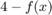

Vilken linje/punkt är symmetrisk i funktionen
x = linspace(-30, 30, 5000); y = (2 * x.^2 + 3 * x) ./ (x.^2 + 4 * x + 5); figure; plot(x, y); xlabel('x'); ylabel('y'); grid on axis equal
då ser vi att symmetrin ligger här, vid
figure; plot(x, y); hold on x_hl = -2; y_hl = 2; plot(x_hl, y_hl, 'ro', 'MarkerSize', 3, 'MarkerFaceColor', 'r'); grid on axis([-6 2, -2 6]); hold off
Symmetri kan bevisas för genom
så för våran funktion blir det
utveckla täljaren
sedan nämnaren
då får vi tillslut att
och nu för 

flyttar 4 in i bråket
utvecklar täljaren
då får vi att
vilket är samma som , vilket betyder att punkten är symmetrisk.